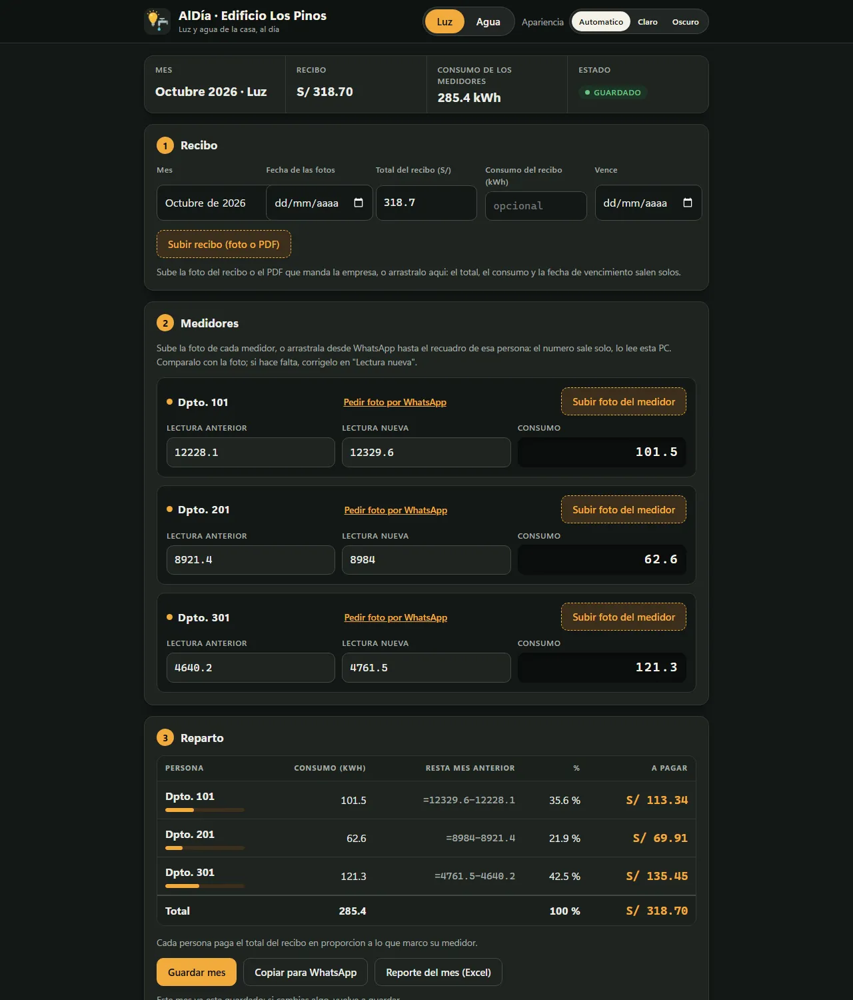

Proyecto principal · Python + IA
AlDía
Reparte los recibos de luz y agua entre varios medidores. El vecino manda la foto de su medidor desde el celular, una IA que corre en la propia PC lee el número y el programa calcula cuánto paga cada uno.
- IA local: lee fotos de medidores y recibos (foto o PDF) con un modelo de visión en Ollama; ninguna foto va a terceros.
- Funciona con la PC apagada: un buzón en Cloudflare Workers guarda las fotos hasta que el programa las recoge.
- Para no técnicos: QR por vecino, pedido por WhatsApp en un clic, Excel del mes y copias de seguridad automáticas.
- 349 pruebas automatizadas y una revisión de seguridad antes de publicarlo.
- Python
- JavaScript
- Ollama
- Cloudflare Workers
- KV
- openpyxl